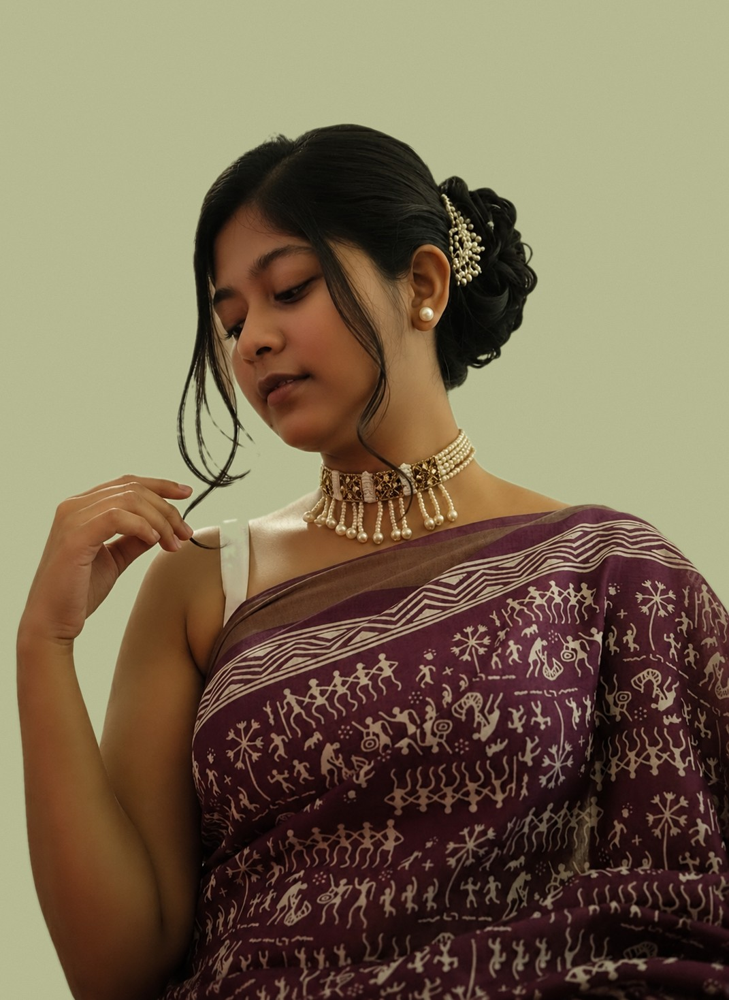

About me
Hello, I'm Barsha.
I'm from Midgard, which is Earth for the mortals. By day I'm a corporate majdoor, or a software engineer if you ask HR. In my own life I'm a full-blown cartoon. In person? Shy. Very shy.
The facts, sort of
Things you should know about me.
- From
- Midgarda.k.a. Earth
- Job
- Corporate majdoora.k.a. Software Engineer
- Hobby
- Collecting scattered thingsa.k.a. art and craft
- Hobby
- Listening to bakbaka.k.a. music
- Hobby
- Fudaknaa.k.a. dancing
- Food
- Ath-paye jeeva.k.a. crab
- Places
- The edges of cliffsa.k.a. mountains
- In person
- Shythe cartoon comes out later
Little things
The little things that are me.
The shy one
This is the in-person version. Quiet, looking down, thinking too much.
Pearls and gold
A choker with a fringe of pearls that sways when I move.
Dancing on plum
Even my saree has little people dancing on it. Fudakna runs deep.

Just me
“A cartoon in my own life. Shy in person.”
If we meet and I go quiet, that's the shy part. The cartoon lives on Instagram.